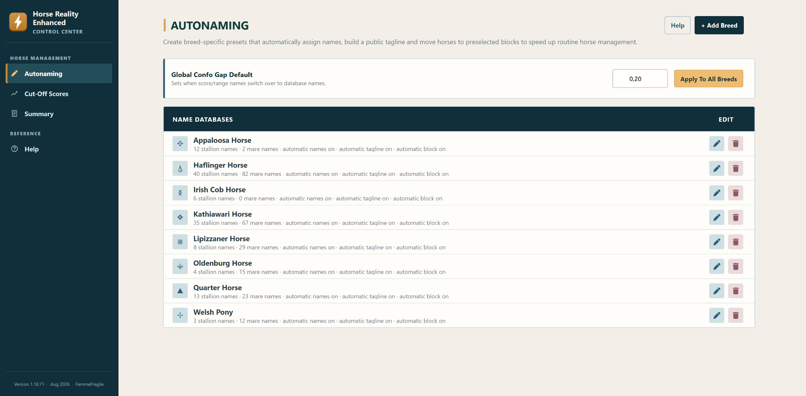

01 / STABLE
Enhanced Filters
Narrow down your horses with additional filters and save combinations you use often.
Made by a player. Built around your stable.
Horse Reality Enhanced brings configurable shortcuts, breeding tools and stable management into your everyday Horse Reality routine.
Version 1.1.25 · currently being tested
Everyday tools
Choose the tools that fit your stable. HRE adds controls to supported Horse Reality pages and keeps detailed configuration in one Control Center.
01 / STABLE
Narrow down your horses with additional filters and save combinations you use often.
02 / BREEDING
Record and review hidden traits, then use stored parent data in breeding predictions.
03 / CONFORMATION
Set breed and sex thresholds and use score highlights to support your breeding decisions.
04 / ORGANISATION
Build breed-specific naming databases, public taglines and block-assignment preferences.
05 / DECISIONS
Track decisions across supported views, with optional moves to your chosen block.
06 / SMALL SHORTCUTS
Copy a configured horse summary, capture a stud-service screenshot or improve dam and foal visibility.

Your data
Version 1.1.25 stores extension settings and records in your current browser profile. HRE includes no advertising or analytics service and does not automatically upload backups or diagnostics to the developer.
Optional Google account connection is planned to let you synchronise selected extension data through your own Drive application-data area.
Google sign-in and sync are not available in version 1.1.25. The planned data handling is described separately in the Privacy Policy.
Good to know
HRE is an independent project shaped by everyday Horse Reality play and feedback from its users.
HRE is developed, a Horse Reality player. The Horse Reality team is not involved in its development, maintenance or support.
Use of Horse Reality Enhanced was approved by the Horse Reality team in October 2026. Players will not receive in-game penalties for using this approved extension. HRE does not bypass or unlock paid Horse Reality features.
Version 1.1.25 is currently being tested. Contact the developer for information about availability.
Not in version 1.1.25. Data stays in the browser profile where you use HRE; local backup export and import are available. Optional Google Drive sync is planned. Read the planned sync disclosure for details.
Contact the developer with the HRE version, the affected feature and the steps that caused the problem. If you choose to include a diagnostic export or screenshot, review it before sharing. HRE does not send these files automatically.
Development & support
Feature suggestions, bug reports and privacy questions are welcome.